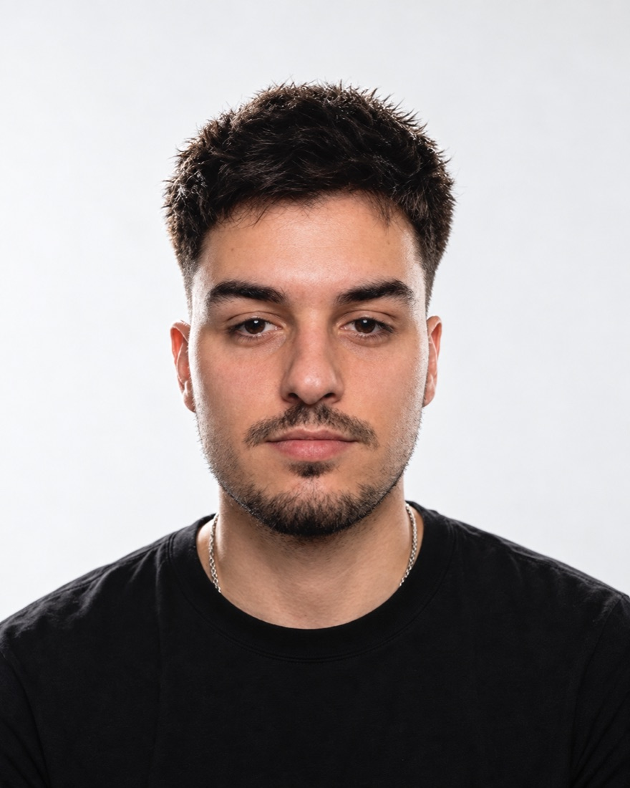

E-commerce
Produit, stock, marketing, service client
Head of AI Operations · Startups et PME · 3 à 12 mois
Audit de chaque poste, outils installés dans vos process, chaque salarié formé sur ses tâches réelles, résultat mesuré.

DisponibleVos salariés ont l’IA. Je leur apprends à travailler avec, chaque jour.
Produit, stock, marketing, service client
Cinq produits conçus avec l’IA
Station F Fighters S26
Et plus de 10 projets livrés en freelance, dont Winstory, BullTrading, LYNEWED.
TRAK, sélectionnée au programme Station F Fighters S26 : des agents spécialisés que je pilote, chaque résultat relu. Ce système, je l’installe chez vous.


LYNEWED : une plateforme livrée, puis son fondateur formé à développer avec l’IA.

Il développe seul avec l’IA, sans développeur externe.
Visio et partage d’écran avec chaque salarié.
Outils, agents et automatisations, selon vos règles de données.
Chaque salarié, sur ses tâches réelles.
Guide interne, référents, veille continue.